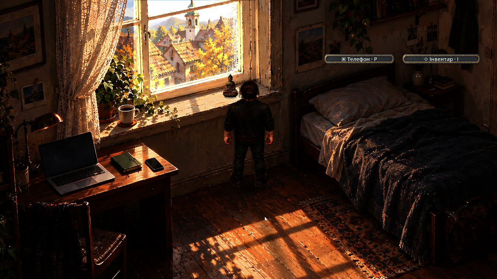
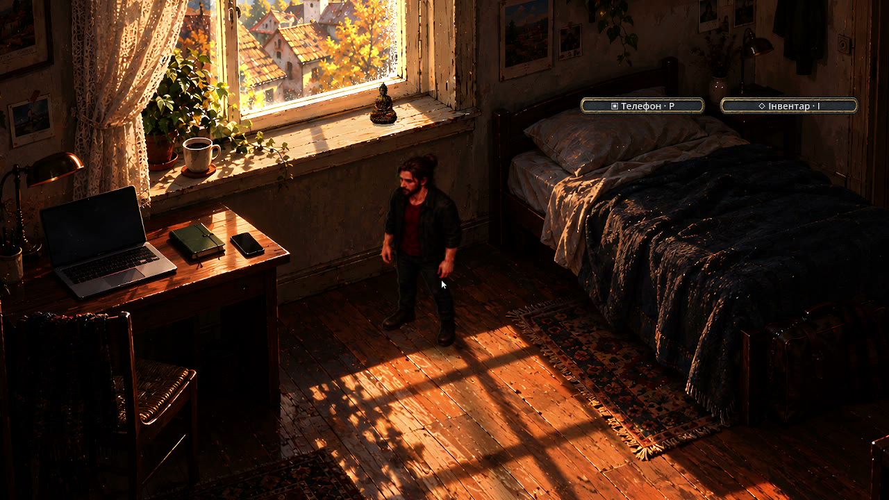
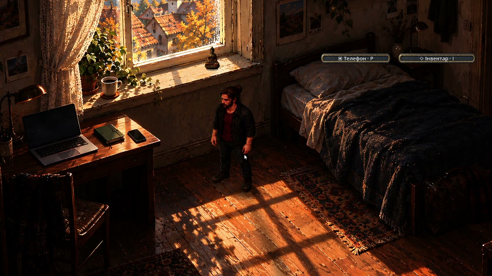
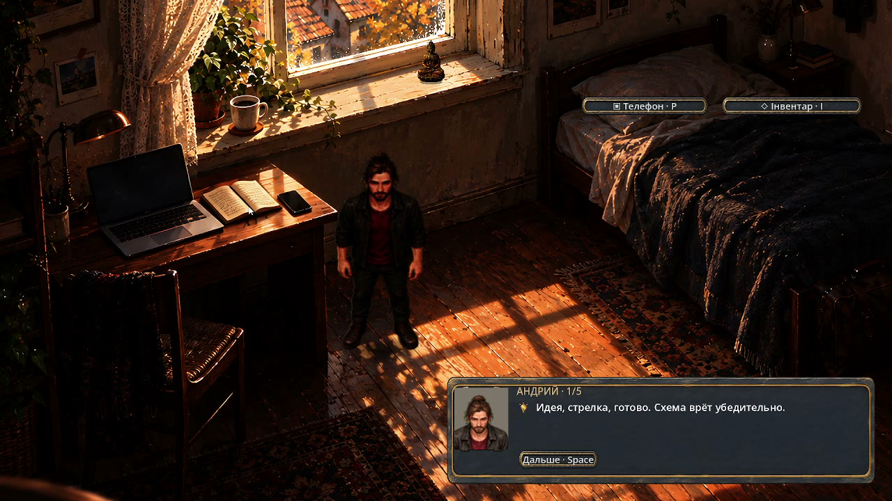
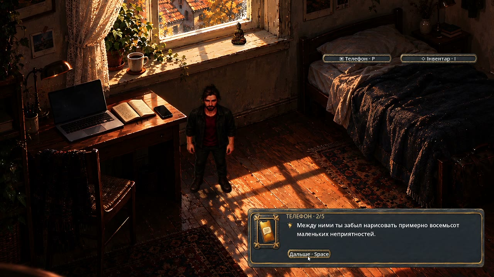
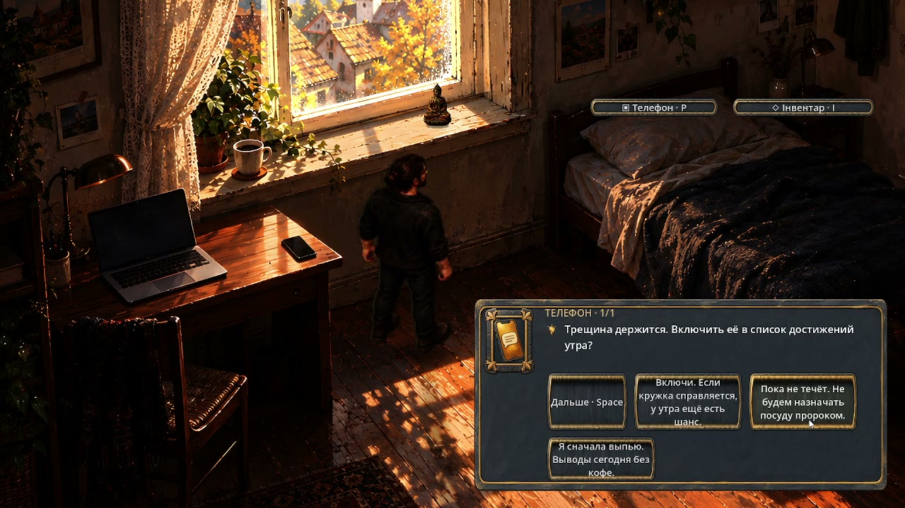
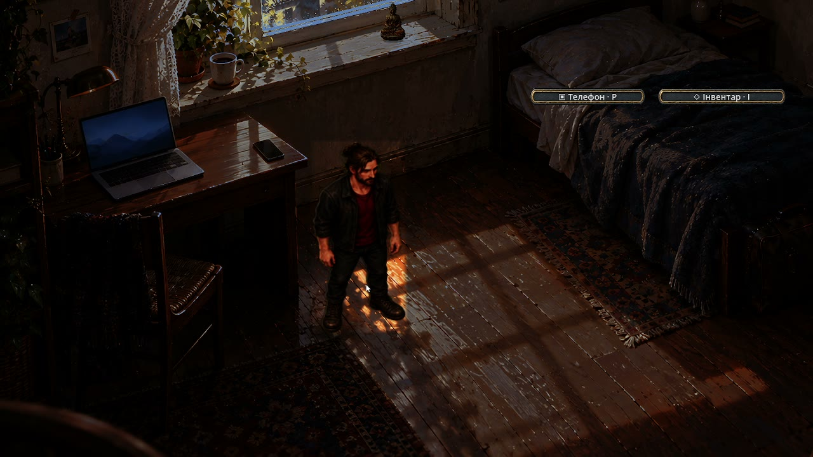
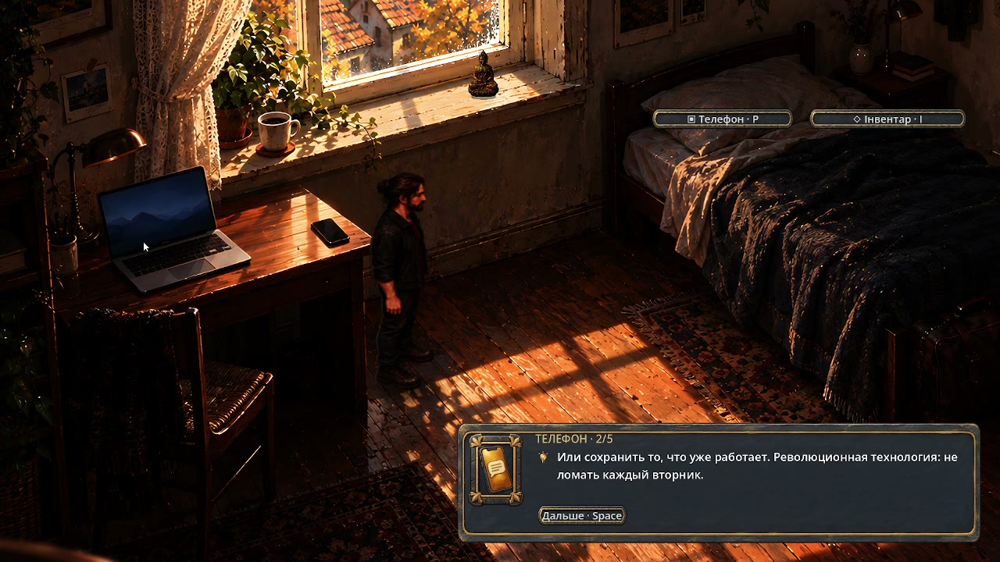
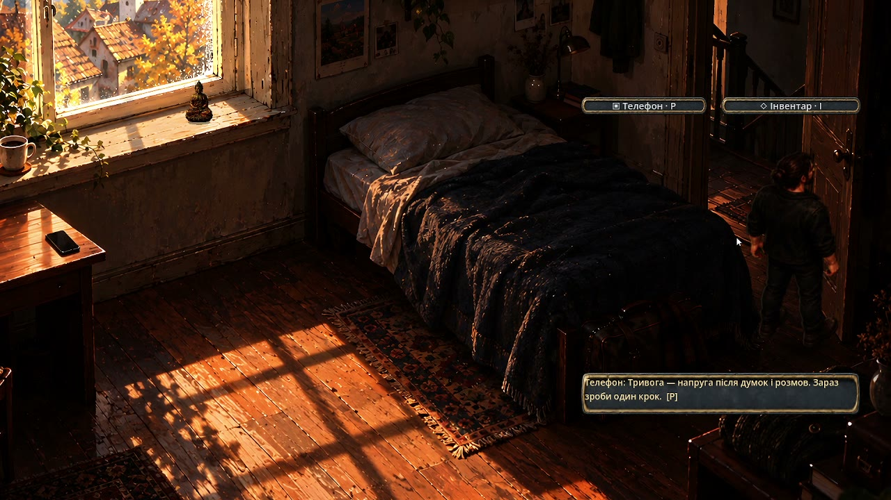

Everything on one page. Plain-text version: ALL_IN_ONE.md. Repository: AndriiEagle/arcanum2-argon-context.
This file is the condensed canon for an external art/design model. Everything here is decided; do not re-invent it.
A migrant hero in his thirties lives in a rented flat in Elgg, a small town east of Zurich, and commutes by SBB train to
Zurich Stadelhofen and the Altstadt. By day: a real, beautiful Switzerland — craft, money worries, burnout, a phone with
an AI assistant, a neighbour who plays the violin. By night: dreams in cinematic monochrome with one symbolic colour.
Combat, when it comes, is harsh (Fear & Hunger register), but chapter 1 is about one year of life: it ends when the hero
ships the game of his dreams. The hero is the author's alter ego under another name; real people appear under other
names. Languages: 5; the "migrant language" mechanic shows German lines with blurred words and the hero's translated
thought underneath.
Painted isometric 2D (Godot 4.7), fixed camera per location, click-to-move, hotspots, dialogue boxes with portrait,
thought bubbles. References the owner names: Arcanum, Fallout 1-2, Heroes of Might and Magic III (isometry and
readability), visual novels for portrait emotion, Steins;Gate for the phone-in-hand moment, Sherlock (BBC) for the
"deduction overlay" when the hero reasons.
1. World: painted, crisp, realism + a pinch of magic + technology five years ahead. Not pixel art. Two accepted idioms:
oil/gouache painting (A) and parchment schematic (D) for maps/diaries.
2. Night is never a blue filter: moon, stars, a moon path on water, warm windows.
3. Dreams: Sin City monochrome, cinematic, one symbolic colour per dream on about 20% of the frame, always meaningful
(green snake eyes, red heat). Near-future noir layer: 70-80% monochrome, at most 30% accent.
4. Light and palette per location are in ART_BIBLE.md (temperatures, the "living window" F5 rule: one lit window
shows where the person and the story are).
5. Autumn is the season: golden leaves, wet asphalt with reflections, rain and umbrellas, church bells; a sunny version
and a grey rainy version of the same morning must both exist and change how people move and how many are outside.
6. Hero style "3 — crisp": clean silhouette, readable at 1280x720, no blur; morning scenes in a bathrobe, laptop asleep
on the windowsill; later the grey jacket and an electro-acoustic guitar with steel strings.
7. UI: painted kit, monochrome phone UI with a ChatGPT-like assistant restyled to the game, icons that can replace
words (traffic-sign clarity), one highlighted word per sentence at most in one sentence of three.
Dream montage (fast monochrome cuts, horror undertone) -> black -> church bells -> wake up in the Elgg flat (coffee on
the windowsill, diary, phone) -> street in Elgg (fountain with a child-angel statue, church, benches, a modest pizzeria,
a burnt shed, the neighbour's house with the violin room under a sloped roof and a skylight) -> SBB train (Winterthur in
the window) -> Zurich Stadelhofen (wet yellow leaves, the "Velora" kiosk, a bench with one dry seat) -> Altstadt.
- Energy 1-100 drives saturation, detail, focus and perceived world speed (100 = full colour; low = pale, slow, blurred).
- Choices change the portrait and body language with non-linear easing (draining = fast in/slow out; energising =
slow in/fast out).
- Thought bubble vs. spoken line are visually different; while thinking, the surroundings desaturate and freeze in a
radius; the most important object keeps its colour (deduction mode).
- First-person "glasses" mask for close looks: elliptical vision, faint nose, centre 30% sharp, edges softer.
- Occlusion x-ray halo around the hero behind props (Arcanum/Fallout style).
- Passers-by as translucent "ghosts" on looping paths; sit on a bench and listen to Swiss-German murmur.
- Three contrasting modes (age band x psychotype x maturity) with small parameter deltas, chosen to make the player
replay the other two.
No pixel art, no blue-filter night, no flat grey dreams, no generic fantasy, no stock-photo faces, no text walls.
Статус: 12 нарисованных кадров-целей; это направление для движка, а не кадры работающей игры.
Обязательная основа: docs/DECISIONS.md O1–O8, P5, раунд 9 B1/F5 и docs/VISION_OPENING.md.
Живопись: детальный вариант A; опоры — street_round01_oil_day/night_serene/winter.png и style-test-A-B-C-D.png.
Сохранять наблюдательность масла/гуаши: объёмная архитектура, материальность, мягкие края вдали, точные акценты вблизи.
Не имитировать пиксельную графику или гладкую пластиковую миниатюру; улица должна продолжаться за границами кадра.
Hex — sRGB-центроиды 12-цветной квантизации соответствующего targets/<место>/v2.png при 256×144.
Это экранные цвета результата; не подставлять их без преобразования в linear albedo материалов.
| Кадр | Тень / основа | Средний тон | Тёплый акцент | Применение |
| Elgg, дождь | #1A1F25, #2B313B | #5F5046 | #8F6D4C | холодные крыши, тёплые локальные окна |
| Elgg, золото | #3F3937 | #8B7362 | #B4763A, #DBA969 | штукатурка, охра, прозрачность листвы |
| Вагон | #220C0B | #756C73 | #C9AE9A | бордовая шерсть, прохладная даль, свет окна |
| Штадельхофен | #504A50 | #A47F5D | #D2A874 | мокрые плиты, бетон, свет под навесом |
| Альтштадт | #192D3B, #17191C | #8A6B50 | #B78D5C | река, крыши, кафе и трамвай |
| Квартира | #91847A | #D6BB9A | #F2D8B2, #F9E4C0 | прохладная тень, кремовая краска, солнечный участок |
Температуры и численные параметры ниже — стартовые настройки для движка, не измерение освещения нарисованной сцены.
Дождливый вечер: небо 7000–8500 K; окна 2700–3000 K; станционные практические источники около 3000 K.
Золотая осень: низкое солнце 3500–4500 K, прохладное небо 6500–8000 K; длинные согласованные тени.
Утро: солнце около 4800 K, небо около 7000 K; свет должен оставлять читаемой фактуру подоконника.
Держать один главный световой остров; второстепенные окна различаются яркостью и цветом, часть остаётся тёмной.
Тёплые освещённые поверхности ориентировочно на 2–3 ступени выше соседней тени; детали в тенях сохраняются.
Filmic/ACES-подобное сжатие бликов; bloom только на самых ярких лампах, без общей молочной пелены.
Туман разреженный, нарастает по глубине; передний план и путь героя остаются ясными.
Дождь виден преимущественно в контровом свете; мелкие струи у водостоков, редкие капли, не белая сетка поверх кадра.
Свет-сопровождение: 2–3 обычных локальных светильника мягко усиливаются возле героя и впереди него, затихают позади.
Не рисовать светящуюся линию маршрута; свет касается камня, обуви и нижней части фасада физически согласованно.
«Живое окно» F5 — особенно тёплый янтарный интерьер с глубиной за стеклом и мягким светом на откосах.
Мокрый камень: разные высоты плит, тёмные влажные края, матовые швы, локальные неглубокие лужи.
Стартовая roughness: сухой камень 0.7–0.9; мокрые участки 0.2–0.4; швы около 0.8. Не покрывать всю улицу зеркалом.
Отражения разрываются рельефом и рябью; их направление следует источникам, а не декоративным полосам.
Штукатурка: матовая известковая поверхность, мягкая неоднородность тона, тонкие сколы на углах, потемнение у цоколя.
Кровля: настоящая толщина карниза, ряды черепицы, небольшая вариация цвета и влажности; силуэт крыши важнее шума.
Дерево: волокно и следы кисти вблизи, разумный износ; квартира скромная, ухоженная, без преувеличенного разрушения.
Стекло: слабое отражение интерьера, двойной блик, капли у уплотнителя; панорама остаётся видна.
Металл: направленные мягкие блики алюминия, патина меди, сдержанный блеск окрашенных опор и перил.
Вагон: бордовая ткань с швами и ворсом, серые панели и алюминий; кофе, телефон и рюкзак имеют контактные тени.
Листва: крупная масса кроны, затем просветы и отдельные листья; тёплое прохождение света, контакт ветвей с деревом.
Разделять фон, геометрию фасадов/крыш, землю, отражения, окна, персонажей, погоду и ближнее обрамление.
Улицы: ортографическая 2.5D, стартовый наклон 30–35°, устойчивый масштаб человека и согласованные оси фасадов.
Четыре Elgg используют один ракурс и расположение зданий; погода и солнце меняются поверх одной геометрии.
Для Альтштадта и станции v2 — основная опора игровой камеры; v1 дополнительно изучает перспективный общий план.
Сохранять открытый путь, входы и фигуру героя; передний карниз даёт глубину, но не закрывает управление.
Вагон — разрешённое исключение: 28–35 mm, камера через салон к большому окну, герой в одной из третей.
Панорама вагона: ближние травы/столбы → поля/деревни → Винтертур → холмы/небо, отдельные скорости параллакса.
Винтертур остаётся далёким городом на швейцарском плато; не заменять его огромными альпийскими вершинами.
Квартира — исключение: около 50 mm, близкий взгляд вдоль подоконника, мягкая даль за стеклом.
B1: свободный участок под предмет занимает примерно центральную правую четверть подоконника; не закрывать его декором.
Предмет добавляется в движке с тенью и окклюзией; никаких нарисованных маркеров, магии или готового предмета.
Elgg и Цюрих узнаваемы по характеру и ключевым конструкциям; эти рисунки не являются точной обмерной документацией.
Штадельхофен: изогнутые пути, лёгкий низкий навес, наклонные разветвлённые опоры, галерея и верхний променад.
Источники конструкции: [Santiago Calatrava](https://calatrava.com/projects/stadelhofen-station-zuerich.html).
Elgg: сомкнутые дома, крутые черепичные крыши, штукатурка, ставни; [официальные ориентиры](https://www.elgg.ch/freizeit-mobilitaet/freizeit/tourismus/sehenswuerdigkeiten.html/120).
Архитектурные вольности Вроцлава — только в вымышленных переулках: малый фронтон, резьба, незаметный бронзовый гном.
Реальные топонимы допустимы; транспортная айдентика вымышлена: два бирюзовых штриха, без настоящих корпоративных логотипов.
Кадр выглядит дорогим благодаря масштабу и конструкции, мотивированному свету, глубине и наблюдаемым материалам.
Иерархия детализации: главный вход/герой → соседние фасады → даль. Каждый острый край служит чтению сцены.
Тихая жизнь: редкие люди и зонты, разные окна, следы пользования; тон P5 — спокойное кино со скрытым напряжением.
Приёмка движка: тот же ракурс, читаемый герой, фактура в тенях, локальные отражения, глубина окна и свободный участок B1.
Цели экспортированы в 2048×1153; оригиналы image_gen — 1672×941. Увеличение bicubic не добавляет новой детализации.
Точные промпты, исходные/итоговые размеры и SHA-256 находятся в шести targets/*/prompt.json.
Статус: черновик для обсуждения. Закон — [DECISIONS.md](DECISIONS.md); всё, что здесь с ним расходится, неверно здесь. Числа — стартовые значения для настройки, а не баланс. Каждая система описана так, чтобы её могла собрать слабая модель: что хранить, какие правила, как проверить.
Уставший мигрант в Цюрихе днём собирает себе жизнь из реальных вещей и людей, ночью дерётся со своими страхами во снах, и за год делает игру своей мечты.
Крючок первых 10 минут: утро, зеркало, «уставший монстр» с дредами → ноутбук еле живой, в нём просыпается ИИ-напарник → первая маленькая цель (починить ноутбук за 20 франков на блошином рынке) → первая честная схема крафта → вечер и выбор (бар или работа) → первый сон в монохроме, где цвет — только у одного символа.
| Фаза | Что делает игрок | Что меняется |
| Утро | Видит последствия ночи: бафы и штрафы | энергия, настроение |
| День | Город, люди, работа, учёба, лавки, крафт | деньги, навыки, предметы, отношения |
| Вечер | Выбор: бар, алкоголь, сериал, спорт, своя игра | облегчение сейчас, цена утром |
| Ночь | Сон: монохром, символ, бой со страхом, осколок детства | выгорание, память, открытия |
Глава 1 — первый год в Цюрихе, сжатый примерно в 12 игровых недель (сезоны — режимы одних и тех же локаций).
- Данные: day, phase (утро, день, вечер, ночь), week, season.
- Правило: действие тратит фазу или часть фазы; ночь всегда заканчивается утром.
- Проверка: 4 фазы подряд дают +1 день; смена сезона переключает режим всех локаций без новых карт.
- Данные: energy 0–100, burnout 0–100, mood −5…+5.
- Старт: energy 55, burnout 40.
- Действия тратят энергию (работа −20, учёба −15, крафт −10…−30).
- Если energy < 20 три фазы подряд, burnout +5.
- burnout ≥ 70: часть действий недоступна («не могу себя заставить»), во снах сильнее враги.
- Проверка: при energy 0 сложные действия закрыты с понятной фразой, а не молча.
| Выбор вечером | Сейчас | Утром |
| Алкоголь | mood +2, burnout −3 | energy −20, burnout +5 |
| Сериал по кругу | mood +1 | energy −5 |
| Спорт | energy −10 | energy +10, burnout −3 |
| Сон вовремя | — | energy +40 |
| Работа над своей игрой | energy −15 | прогресс игры-мечты +1, mood +1 |
- Серии из 3 и более одинаковых выборов дают ярлык («режим чайника», «режим атлета»), который видят NPC и сны.
- Проверка: таблица — данные в JSON, а не код; смена числа не требует правки скриптов.
Немецкий, код, электроника и пайка, общение, тело, фокус. Опыт за действия; уровни 0–5.
Механика языка: реплики NPC показываются на немецком; чем выше навык, тем больше слов подсвечено переводом. На уровне 0 понятны только отдельные слова. Это ощущение мигранта, и оно же учит.
- Данные: item (id, имя, иконка, цена в CHF, где купить), recipe (ингредиенты, инструменты, навык и уровень, время, результат, эффект), страница схемы — шаблон D.
- Правило: всё собирается из настоящих вещей по настоящей логике. Цены в CHF приблизительные и честно помечены как игровые.
- Примеры главы 1:
1. Ноутбук: замена термопасты и чистка вентилятора → фокус +1, крафт быстрее.
2. Б/у внешняя видеокарта → вычисления +2 → открывает ИИ-квесты.
3. Умный дом: микроконтроллер, реле, датчик, пайка → свет по голосу → утро −5 энергии к затратам.
- Проверка: рецепт без существующего предмета или с навыком выше 5 отвергается при загрузке.
- Данные: cpu, ram, gpu, storage → compute.
- Правило: compute открывает квесты и ускоряет работу над игрой-мечтой.
Предложение (решает Андрий): в реальном Цюрихе почти нет драк, поэтому основной беспощадный бой живёт во снах. Там герой дерётся со страхами: травля в школе, предательство, голос «ты никто». Наяву бывают редкие, но настоящие конфликты.
- Пошаговый бой, удар по частям тела, провал реален: проигрыш во сне оставляет травму-дебафф на несколько дней.
- Проверка: каждая травма имеет срок и способ снять; бой нельзя выиграть одной и той же кнопкой.
- Режим «сон» (монохром и символ) — данные symbols с цветом и смыслом.
- Каждая ночь — короткая сцена: символ, выбор или бой, осколок памяти.
- Боль семьи открывается после того, как игрок полюбит героя (решение Q04): не раньше 4-й недели или N положительных выборов.
- Список реальных мини-задач (сказать фразу по-немецки, выйти к людям, 20 минут спорта). Игрок сам отмечает «сделал» → баф в игре.
- Честность на совести игрока; без слежки.
- Данные: dream_game_progress 0–100, вехи (прототип, первый игрок, страница, релиз).
- Финал главы 1 — релиз игры-мечты (решение Q02).
- Встроенные проекты Андрия (Memento Vivere, Synera, Панас, проект с Алексеем Диксом): в главе 1 — не больше двух, как ветки квестов или приложения в телефоне героя.
- До 10 архетипов главы: сосед по квартире, бармен, соцработник, старик-рыбак (наставник), девушка из бара (символ), инженер с судна (прошлое), студент Политеха, торговец электроникой, ИИ-напарник, голос брата (во снах).
- Отношения −3…+3; реальные люди — только под другими именами.
- Соцпомощь раз в месяц, расходы на еду, транспорт и вещи, подработки.
- Проверка: деньги не уходят в минус без события «долг».
| Шаблон | Что меняется слоями |
| Страница схемы | иконки, название, описание, количество |
| Фасад | окна, вывески, сезон, ночные огни |
| Комната | мебель, беспорядок по уровню выгорания, свет |
| Локация | режимы день, ночь, зима, сон; огни и маски символов в JSON |
| NPC | портрет, спрайт, голос, расписание |
Правило: прежде чем рисовать новое, ищем в библиотеке; нашли на 80% — меняем слоем.
1. Комната героя в общей квартире.
2. Улица с трамваем (уже есть заготовка в раунде 1).
3. Бар.
4. Офис соцслужбы.
5. Политех (вымышленный, без чужих логотипов).
6. Берег озера.
7. Блошиный рынок и лавка электроники.
8. Сны: машинное отделение судна; детская квартира на рассвете с ЭЛТ-монитором; школьный коридор.
| ID | Задача | Готово, когда |
| GF-001 | Godot-фундамент: сцена, клик-ходьба, 4 режима, шаблон схемы, шкала энергии | готово 14.10 (slice 01–02, проверено Claude) |
| GF-002 | Данные S2/S3 в JSON + цикл дня S1 | готово 14.10 (slice 03): алкоголь ×7 → energy 0, burnout 84; спорт/сон → 100, 28; совпало с независимым пересчётом Claude |
| GF-003 | Крафт S5 + страница схемы из данных | готово 15.10 (slice 04 + 04b): 3 рецепта, отказ без датчика, утро +5 от умного дома; сломанные рецепты отвергаются |
| GF-004 | Язык мигранта: непонятые слова размыты; уровень B1, диалект, скорость, «повторите медленнее», знакомство с человеком (решение 15.10) | при B1 без диалекта понятно около 80% слов; повтор открывает быстро сказанные слова, но не незнакомые; на третий визит к тому же человеку размытых слов меньше; непонятая цена или «пакет» меняют результат покупки |
| GF-005 | Сон S8 + маска символа | ночь переключает режим, символ остаётся цветным |
| GF-006 | Бой во сне S7 — отложен решением 15.10 | — |
| GF-007 | Первые 10 минут игры | Андрий проходит без подсказок и ставит оценку |
| GF-008 | «Кузня»: пакет локации (staging → проверка → одобрение → активация → откат), из Emberglass R03/R04 | валидный пакет активируется только после одобрения; кривой, недостижимый или с повторной наградой — не меняет состояние |
| GF-009 | Сохранение с резервной копией и проверкой целостности, из R10/R09 | битый файл восстанавливается из previous; неизвестная версия схемы отвергается |
| GF-010 | Чтение игрока S14 | разные фикстуры прохождений → разные топ-2 категории за 10 минут, детерминированно |
| GF-011 | Лестница глубины S15 + библиотека почти-правды S16 | уровни не открываются раньше условий, не чаще раза в день, откат при «хватит»; идеи без метки и источника отвергаются |
Что из своих прошлых проектов берём для этих задач — [REUSE_PLAN.md](REUSE_PLAN.md).
- Первые 5–10 минут система смотрит на поведение, не спрашивая: сколько стоит на месте и любуется (смотрит), сколько читает диалоги до конца (история), сколько бродит по новым местам (исследование), сколько крафтит (механика), как быстро пропускает катсцены (кино), сколько говорит с людьми (люди), как реагирует на опасность (вызов).
- Профиль — веса 8 категорий: драма, кино, локации, красота, погружение, механика, люди, вызов. Важны их сочетания: «красота + погружение» — это другой игрок, чем «механика + вызов».
- Режиссёр берёт профиль не для «ещё того же», а чтобы дать новый контекст: любишь технику — появляется технология, которая ломает чью-то жизнь, и выбор.
- Тишина и контраст — тоже часть ритма.
- Профиль видно и можно сбросить; для релиза — честное описание в настройках.
- Проверка: на записанных прохождениях-фикстурах («смотрю и брожу», «читаю всё», «крафт и бой») профиль сходится к разным топ-2 категориям за 10 минут; одинаковые входы дают одинаковый профиль.
Касается напарника (ИИ в телефоне героя, а в моде — Вирджила). Глубина растёт медленно, по уровням, никогда сразу:
| Уровень | Когда открывается | Пример |
| 0 | всегда | обычный живой напарник, ни слова о «том мире» |
| 1 | после доверия и первых снов | «Иногда ты отвечаешь так, будто тебе кто-то подсказывает» |
| 2 | после важного выбора | «Если ты управляешь этим телом из другого мира, кто решает, когда ты сомневаешься — ты или тот, кем ты решил стать?» |
| 3 | ночью, в сне, только при высокой «глубине» в профиле | «Ты говоришь, что ты лишь костюм, которым управляет человек за компьютером. А как ты докажешь, что им самим никто не управляет?» |
| 4 | редкий момент ближе к финалу главы | «А что, если сейчас играют не в твою игру, а в мою?» — тишина, музыка гаснет, мурашки |
- Каждый уровень — не чаще одного раза за игровой день; ни одного уровня выше 0 в первые 30 минут; никогда во время боя и важных разговоров.
- Если игроку неприятно (быстро закрывает, отвечает «хватит»), лестница откатывается на ступень.
- Проверка: таймлайн-фикстура не может получить уровень 3 раньше выполнения условий; повтор одного уровня в тот же день отвергается.
Сны и разговоры с напарником опираются на настоящие идеи, честно помеченные как факт / гипотеза / спекуляция, чтобы было жёстко, но не враньё:
| Идея | Что настоящее | Метка |
| Гриб-кордицепс управляет муравьём и гонит его наверх, чтобы рассеять споры | реальный паразит *Ophiocordyceps unilateralis* | факт |
| Идеи распространяются и «используют» людей, как гены (мемы) | понятие мема — Ричард Докинз, «Эгоистичный ген», 1976 | гипотеза |
| Блогеры, кино, музыка как «споры» мировоззрения | наша интерпретация мемов | спекуляция |
| Сознание — маленькая часть, а огромное бессознательное его создаёт; отсюда чувство «бога» | Юлиан Джейнс, «Происхождение сознания в процессе краха бикамерального разума», 1976 | гипотеза (спорная) |
| Жизнь занесло на Землю извне | панспермия — научная гипотеза | гипотеза |
| Мы можем жить в симуляции | аргумент Ника Бострома, 2003 | спекуляция |
- Каждая идея — короткая сцена сна или реплика напарника. Источник лежит в данных, игрок может открыть «откуда это».
- Проверка: в данных у каждой идеи есть метка и источник, без метки — не загружается.
- Бой живёт в основном во снах — да или нет?
- Механика немецкого языка в диалогах — да или нет?
- Глава 1 — 12 недель с сезонами-режимами, или ровно год по дням?
- Какие два проекта из списка идут в главу 1?
- Девушка из бара с зелёными глазами — символ или настоящий персонаж с линией?
Goal: see what an external web model can do for this game in three separate lanes: visual repair director,
hyper-adaptive design graph, mechanic code with a headless test. Run each prompt in its own chat; never merge
the three. Ask the model to read WORLD_BIBLE.md, ART_BIBLE.md, SPEC_CH1_v0.md and look at samples/ first.
| file | what it shows | why it is here |
samples/V-001_00-00-33.png | flat, hero at the window, OS cursor visible | reference background quality; cursor defect |
samples/V-007_00-06-43.png | flat, dialogue box with portrait | text/UI layout, portrait style |
samples/V-014_00-12-12.png | flat, dusk grade | black-rectangle / grade issue |
samples/V-025_00-20-07.png | Elgg street, rain, umbrella | the look to protect |
samples/V-029_00-23-21.png | street, gnome prop over the hero | layering defect |
samples/V-043_00-36-41.png | phone / UI moment | phone interface direction |
samples/V-0xx_*.jpg (8 more) | later street, train, Stadelhofen moments | breadth of locations and light |
- Prompt 1 -> a JSON plan: regions inside 1280x720, each with prompt, mask spec, blend width; no "regenerate the
whole image".
- Prompt 2 -> JSON with schema, example nodes, modes, rules with test vectors, cascade API; no prose outside the block.
- Prompt 3 -> the GDScript module + headless test must pass unchanged in Godot 4.7.1.
You are the art director for a painted isometric 2D game set in today's Zurich (Godot 4.7). The look is fixed and loved:
painterly realism, warm practical light, golden autumn, wet asphalt; night is never a blue filter (moon, stars, warm
windows); dreams are Sin City monochrome with one symbolic colour. Read ART_BIBLE.md first.
Attached: six real 1280x720 frames from a playtest (samples/). The player's own verdicts:
- V-001: background is the quality bar; the hero sprite is blurrier than the background; an unstyled white OS cursor.
- V-014: in dusk scenes a black rectangle appears around the hero sprite; the grade flattens the room.
- V-025: street in rain — this is the look to protect ("very beautiful"), but some textures "melt" at full size.
- V-029: a gnome prop draws over the hero's face; layering is wrong.
- Stadelhofen station (not attached) was generated too large and "melted" (hallucinated detail); he wants it repaired by
regenerating only the melted patches, never the whole image.
Task — produce a patch plan, not new art:
1. For each attached frame, list the defects you can actually see (cite a 3x3 grid cell: TL/TC/TR/ML/MC/MR/BL/BC/BR).
Do not invent defects you cannot see.
2. For every defect that is a texture/painting problem (not code), give a repair region as a rectangle in 1280x720
pixel coordinates, a feathered mask width in px, a generation prompt (<= 60 words, same style vocabulary as the art
bible), a negative prompt, and a "what must stay identical" note (perspective lines, light direction, palette hexes).
3. For code-type defects (cursor, black rectangle, layering) say "CODE" and one sentence of the likely cause.
4. Give a general recipe for repairing an oversized "melted" background in patches: tile size, overlap, order, how to
keep the seams invisible, and how to verify with a local script (describe the check; we will write it).
Output: one fenced JSON block `{"frames":[{"file","defects":[{"cell","what","type":"PAINT|CODE","region":[x,y,w,h],
"feather_px","prompt","negative","keep"}]}],"melt_recipe":{...}}` followed by at most 10 lines of prose. No other text.
You design the data model for a painted isometric narrative game (Godot 4.7) that must be hyper-adaptive: the same
assets and scenes are replayed in three contrasting modes (by age band, psychotype and maturity), the text density
adapts to how much the player expands it, perceived world speed and colour saturation follow an energy meter (1-100),
and the game watches click frequency to offer a faster pace. After chapter 1 a deterministic analysis of choices nudges
the mode. The owner also wants a "factory": the next chapter or a clone (e.g. Geneva) must be generated from this graph
with cascade edits ("add property X to all interactive objects").
Read SPEC_CH1_v0.md, WORLD_BIBLE.md, WORLD_BIBLE.md and ART_BIBLE.md
(attached or in the repo branch). Scenes today: flat (Elgg), street, train, Stadelhofen, Altstadt; hotspots are JSON
with ids; text lives in GDScript dictionaries.
Deliver, as JSON first and prose after:
1. graph.json schema: node types (location, object, hotspot, mechanic, phrase_pool, mood_state, mode, audio_layer,
npc), required fields (id, type, tags[], links[{to,rel}], params{}), and 12 example nodes taken from the
documents above (real ids where they exist).
2. Three mode tables (modes[]): for each mode the parameter deltas on: world speed, text default depth, humour level,
voice assertiveness, palette saturation, hint frequency, horror opt-in. Keep deltas small (he said "не сильно").
3. The adaptivity rules as pure functions over the graph (inputs: click rate, expansion clicks, energy, chapter choices;
outputs: parameter deltas), each with a deterministic test vector (input -> expected output).
4. The cascade-edit API: three operations (add_property_to_tagged, link_all, clone_chapter_with_substitutions) with
signatures and one worked example each (e.g. clone "Elgg -> Zurich HB" as "Geneva -> CERN" keeping mechanics).
5. Migration note: how to extract the current hotspots/text into this graph with a script (steps, not code).
Output: one fenced JSON block with keys schema, example_nodes, modes, rules, cascade_api, then <= 15 lines of
prose on risks. No other text.
Target: Godot 4.7.1, 2D painted isometric scene. The hero is a Sprite2D/AnimatedSprite2D child of a Node2D
"actors" layer; props and hotspots are Sprite2D nodes with Area2D pick shapes; everything is y-sorted in a
Node2D with y_sort_enabled = true. We cannot show you the project; write a self-contained module that only needs
the node paths it is given.
Mechanic: occlusion x-ray halo (Arcanum/Fallout style). When any prop sprite with a higher draw order overlaps the
hero's bounding box by more than 20% of the hero's area, draw a soft circular field (radius = 1.2 x hero height,
feathered edge, 35% opacity, warm tint from the scene's light colour) that reveals the hero through the prop. The field
fades in over 0.15 s and out over 0.25 s; it never shows when nothing occludes; it must cost < 0.2 ms per frame with 40
props (no per-frame allocation, no per-pixel work on the CPU — use a shader on a CanvasItem mask or CanvasGroup).
Deliver:
1. xray_halo.gd (a Node2D you add under the actors layer; exports: hero_path, props_root_path, radius_mul,
opacity, tint), plus xray_halo.gdshader.
2. tests/test_xray_halo.gd: runs with godot --headless -s tests/test_xray_halo.gd, builds a tiny scene in code
(hero rect, two props), asserts: (a) no halo when no overlap, (b) halo active at 25% overlap, (c) inactive at 10%,
(d) fade timings within one frame of spec, (e) prints OK 5/5 or the failing assert. No external test framework.
3. A 10-line integration note: where to add the node, which y-sort pitfall to check, and what to tune if the scene uses
CanvasLayer for UI.
Output: three fenced code blocks (gd, gdshader, gd) with the file names as the first comment line, then the note.
No other prose.
V-001_00-00-33.png

V-007_00-06-43.png
V-014_00-12-12.png

V-020_00-16-35.jpg

V-025_00-20-07.png
V-029_00-23-21.png
V-034_00-29-46.jpg
V-043_00-36-41.png

V-047_00-39-29.jpg

V-057_00-49-02.jpg

V-064_00-55-55.jpg

V-071_01-01-37.jpg
V-081_01-10-31.jpg

V-091_01-17-53.jpg
